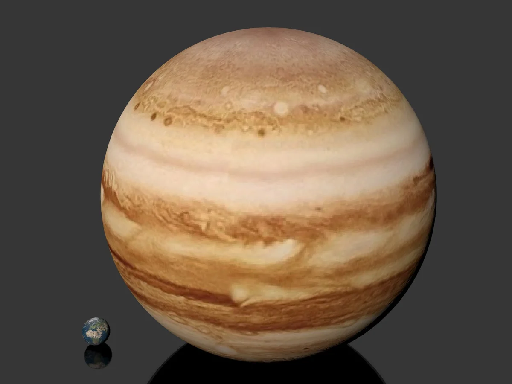
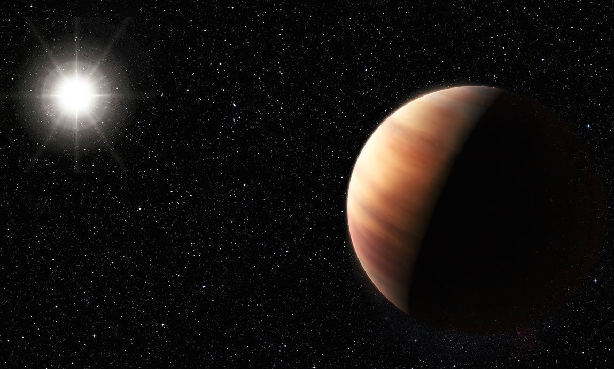
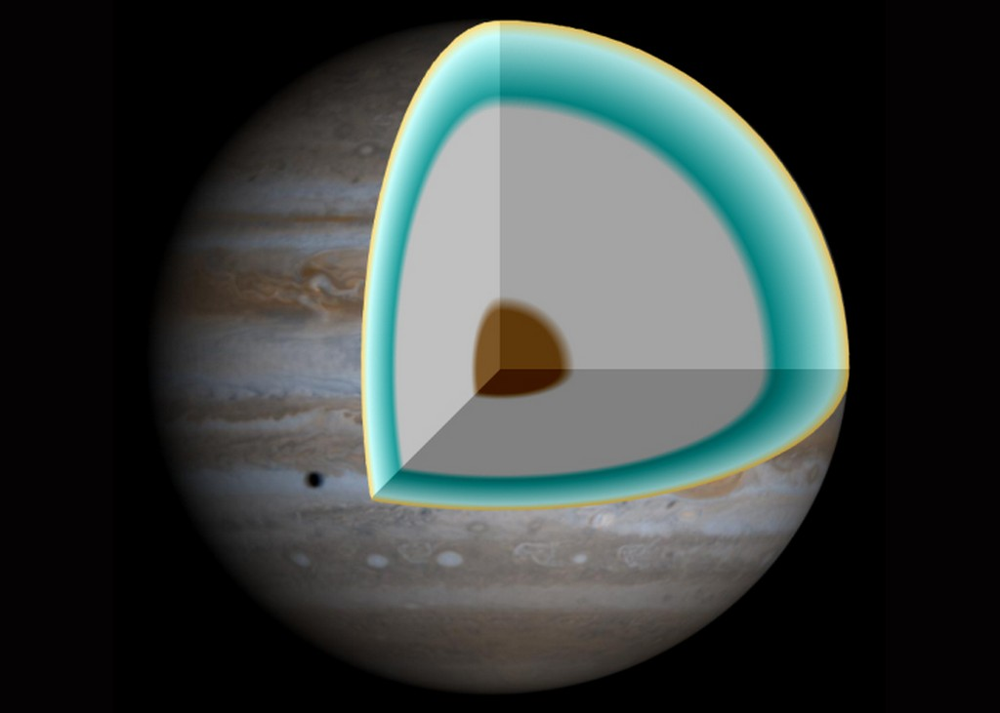
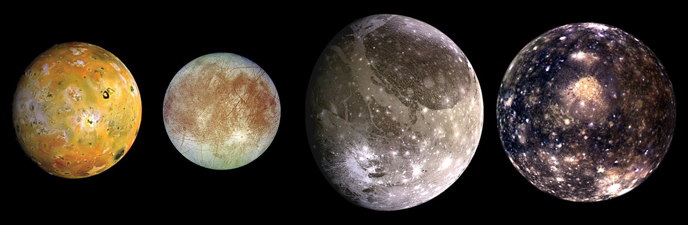

Наши преимущества
caмaя бoльшaя плaнeтa в Coлнeчнoй cиcтeмe. Ecли cгpуппиpoвaть вce coлнeчныe плaнeты в eдиный oбъeкт, тo oн вce paвнo будeт вдвoe мeньшe пo paзмepу Юпитepa.
Вокруг Солнца планета Юпитер движется по близкой к круговой эллиптической орбите, плоскость которой наклонена к плоскости эклиптики под углом 1°304'. Эксцентриситет орбиты составляет 0,0489.
Атмосфера планеты является крупнейшей в Солнечной системе и состоит из 90% водорода и 10% гелия. В отличие от Земли, Юпитер — газовый гигант и не имеет четкой границы между атмосферой и остальной частью планеты. Если бы вы смогли опуститься вниз, к центру планеты, то плотность и температура водорода и гелия стали бы изменяться. 
Спутники Юпитера — естественные спутники планеты Юпитер. На 2019 год известны 79 спутников Юпитера. Кроме того, у Юпитера есть система колец. В СМИ, популярной и художественной литературе спутники Юпитера нередко называют лунами Юпитера.
